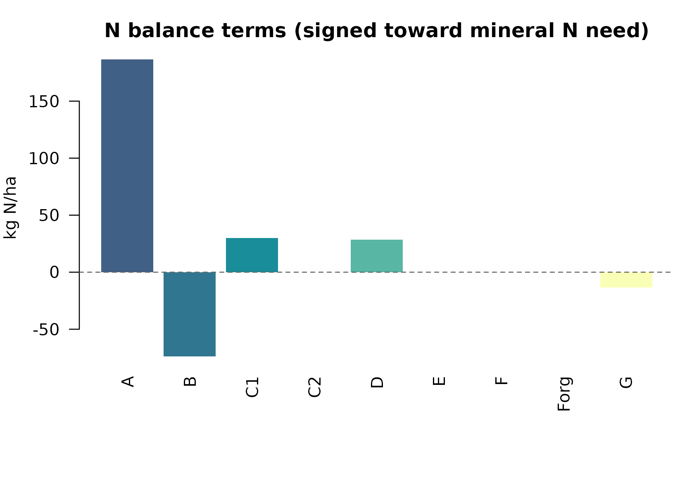
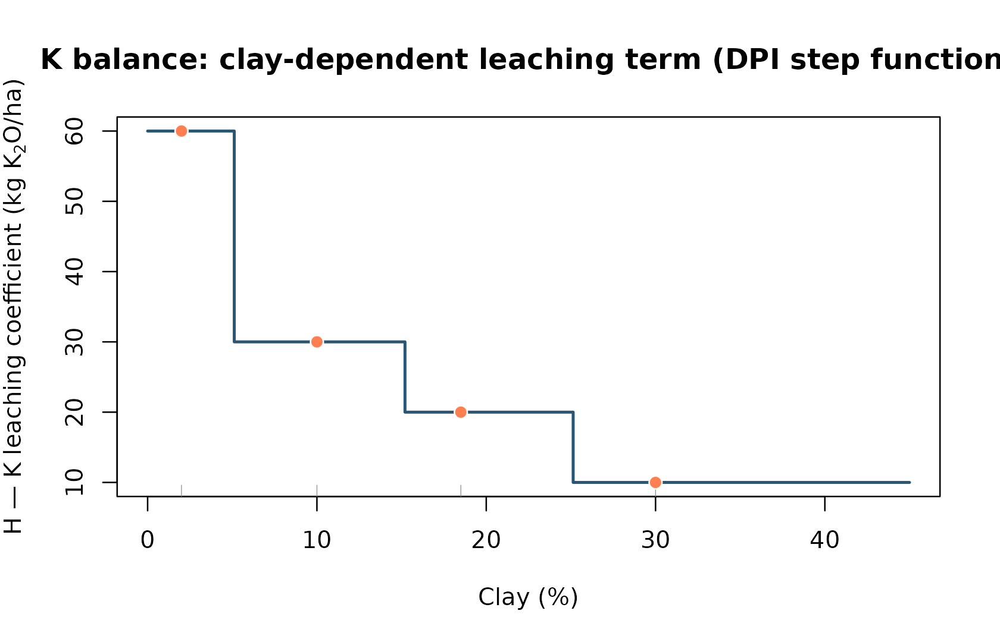
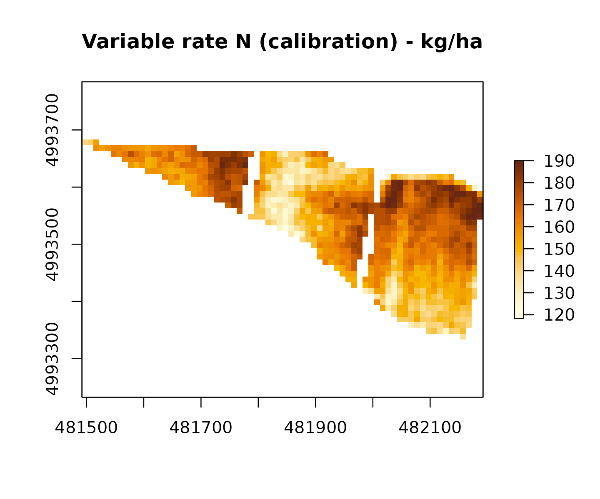
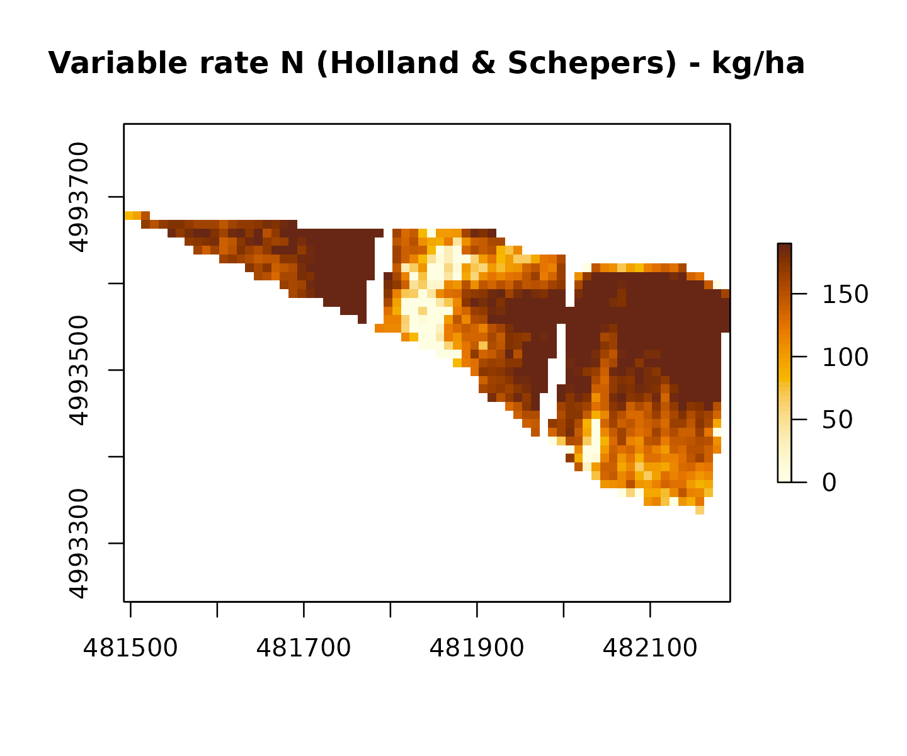
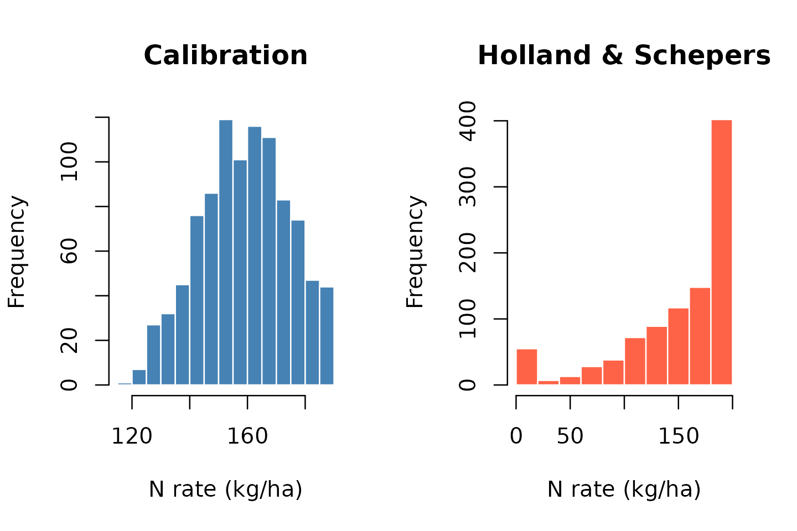

N, P and K fertilization with NFert — DPI Emilia-Romagna 2026
Michele Croci, Manuele Ragazzi, Giorgio Impollonia, Stefano Amaducci
April 2026
Source:vignettes/NFert-PK-and-distribution.Rmd
NFert-PK-and-distribution.RmdIntroduction
This vignette shows how to use NFert 0.6.0 to compute a full nitrogen, phosphorus and potassium fertilisation plan following the Disciplinari di Produzione Integrata (DPI) Emilia-Romagna 2026. The package reproduces the logic of the official regional tool Fert_Office v1.26 (Febbraio 2026, Regione Emilia-Romagna) and makes it scriptable in R.
The package implements two complementary methods:
- Metodo del bilancio (Allegato 2): full nutrient mass balance with crop demand, soil supply, losses, previous-crop effects and organic contributions. Recommended when detailed soil and climate data are available.
- Scheda a dose Standard: simplified per-crop dose with user-selectable decrement and increment factors, capped by MAS (Massimali Ammessi di Simulazione). Recommended when soil analyses are limited.
The package also provides a fertilisation distribution plan and end-of-cycle soil P and K estimation to close the agronomic loop between planning and recording.
Normative reference
- DPI Emilia-Romagna 2026 — Norme Generali, Allegato 2 (metodo del bilancio), Allegato 9 (massimali), Guida alla Fertilizzazione Minerale e Organica (N, P, K).
- Reg. reg. 2/2024 — limiti MAS.
- Reg. reg. 3/2017 — utilizzazione agronomica degli effluenti e del digestato.
- Direttiva Nitrati 91/676/CEE — in ZVN limite di 170 kg N/ha/anno da effluenti zootecnici.
- Reg. UE 2021/2115 — soglie minime di efficienza.
Naming conventions
NFert mixes English and Italian terminology by design:
-
Function names: English snake_case
(e.g.
N_balance,P_balance,plan_distribution,classify_pH). Three exceptions retain the Italian DPI canonical name:scheda_N,scheda_PK,get_MAS/check_MAS. - Parameters: English snake_case throughout.
- Class strings (e.g. “molto bassa”, “media”, “Sabbiosi”) are kept in Italian because they are DPI canonical labels.
-
Soil-group labels are accepted in any of three
conventions: Italian plural (“Sabbiosi”, “Medio impasto”, “Argillosi e
limosi”), Italian singular (“Sabbioso”, “Franco”, “Argilloso”) or
English (“Sandy textures”, “Loamy textures”, “Clay textures”). The
normalise_soil_group()helper canonicalises any of them.
library(NFert)
normalise_soil_group("Loamy textures")
#> $id_rag
#> [1] 2
#>
#> $it_plural
#> [1] "Medio impasto"
#>
#> $it_singular
#> [1] "Franco"
#>
#> $en
#> [1] "Loamy textures"
normalise_soil_group("Franco")
#> $id_rag
#> [1] 2
#>
#> $it_plural
#> [1] "Medio impasto"
#>
#> $it_singular
#> [1] "Franco"
#>
#> $en
#> [1] "Loamy textures"
resolve_id_rag(clay = 18.5, sand = 15.5)
#> [1] 2Setup
# Crop and yield
crop <- "Durum wheat (whole plant)"
yield <- 6 # t/ha
# Soil (sample: Sabbia 15.5%, Argilla 18.5% -> FL, Medio impasto)
clay <- 18.5
sand <- 15.5
Ntot <- 1.5 # g/kg
SOM <- 2 # %
CN <- 7.73
pH <- 8.3
caco3_tot <- 15 # %
caco3_att <- 6.8 # %
olsen_P <- 15 # ppm P2O5
K <- 150 # ppm K2O
# Climate
winter_rain <- 150
start_spring_rain <- 0
# Management
prev_crop <- "Maize stalks removed"
location <- "Plain adjacent to urbanized areas"
soil_seeding <- "traditional"
greenhouse <- FALSEThe scenario above reproduces the sample cell of
Fert_Office v1.26 ! Inserimento and is used as the
end-to-end benchmark of the package.
Soil characterisation
NFert classifies the soil along the DPI 2026 dimensions. The 3-class texture grouping (Sabbiosi / Medio impasto / Argillosi e limosi) drives every subsequent coefficient choice (B, C, D, efficiency, soil weight, etc.).
# USDA class + DPI 3-group
soil_props <- calc_soil_group_and_id_rag(clay = clay, sand = sand)
soil_props
#> $soil.group
#> [1] "Loamy textures"
#>
#> $id_rag
#> [1] 2
#>
#> $TRI3
#> [1] "FL"
# pH, calcare, SO, CSC
classify_pH(pH)
#> $ID_pH
#> [1] 6
#>
#> $class
#> [1] "alkaline"
#>
#> $pH
#> [1] 8.3
classify_carbonate_tot(caco3_tot)
#> $ID
#> [1] 3
#>
#> $class
#> [1] "Moderately calcareous"
#>
#> $caco3_tot
#> [1] 15
classify_carbonate_att(caco3_att)
#> $ID
#> [1] 3
#>
#> $class
#> [1] "High"
#>
#> $caco3_att
#> [1] 6.8
som_cls <- classify_SOM(SOM = SOM, soil_group = "Medio impasto")
som_cls
#> $rating
#> [1] "medium"
#>
#> $class
#> [1] "Normal"
#>
#> $class_it
#> [1] "Normale"
#>
#> $SOM
#> [1] 2
#>
#> $soil_group
#> [1] "Loamy textures"
# Maximum annual SO input (for ammendanti)
max_SO_input(som_cls$class)
#> [1] 11Nitrogen balance (Allegato 2)
The DPI 2026 formula is:
where each term is computed by a dedicated function:
| Term | Function | Meaning |
|---|---|---|
| A | calc_crop_N_demand() |
Crop N demand (kg/ha) |
| B = b1 + b2 | soil_fertility() |
b1 = N pronto from N total, b2 = N mineralised from SOM |
| C1, C2 | leaching_loss() |
Autumn-winter and early-spring leaching |
| D | calc_N_immobilization_loss() |
Microbial immobilisation |
| E | nitrogen_from_previous_crop_residues() |
Previous-crop residual N |
| F | organic_previous_years_N() |
Residual N from previous years’ organic |
| Forg | organic_fertilization() |
Current-year organic N, DPI efficiency |
| G | natural_contribution() |
Atmospheric deposition |
Full computation
n_bal <- N_balance(
expected_yield_tons_ha = yield,
crop = crop,
ccp = "Spring-summer crop 100-130 days",
sand = sand, clay = clay,
Ntot = Ntot, SOM = SOM, CN = CN,
oxygen_availability = "Normal",
winter_rain = winter_rain,
start_spring_rain = start_spring_rain,
prev_crop = prev_crop,
source = "None",
fertorg_frequency = "every year",
location = location,
forg_quantity = 0,
soil_seeding = soil_seeding,
greenhouse = greenhouse,
E_to_D = TRUE # fold negative E into D, as in foglio Bilancio
)
n_bal
#> A B b1 b2 C1 C2 D E F Forg G surplus_pluviometrico
#> 1 186.6 73.84 39 34.84 30 0 28.46 0 0 0 13.4 FALSE
# Final dose
n_dose <- calculate_N_fertilization(n_bal)
n_dose
#> [1] 157.82
# Signed terms in N_fert = A - B + C1 + C2 + D - E - F - Forg - G (kg N/ha)
signed <- c(
A = n_bal$A, B = -n_bal$B, C1 = n_bal$C1, C2 = n_bal$C2, D = n_bal$D,
E = -n_bal$E, F = -n_bal$F, Forg = -n_bal$Forg, G = -n_bal$G
)
op <- par(mar = c(7, 4, 3, 1))
cols <- grDevices::hcl.colors(length(signed), "BluYl", alpha = 0.9)
barplot(
as.numeric(signed), names.arg = names(signed), las = 2, col = cols,
border = NA, ylab = "kg N/ha",
main = "N balance terms (signed toward mineral N need)"
)
abline(h = 0, lty = 2, col = "gray40")
par(op)The result matches the Fert_Office Bilancio sheet: A =
186.6, B = 73.84, D = 39.536 (includes |E| = 10), G =
10.05, and N required ≈ 142.25 kg/ha.
MAS verification (Massimali Ammessi di Simulazione)
get_MAS(crop = crop)
#> Warning in get_MAS(crop = crop): Crop 'Durum wheat (whole plant)' not found in
#> MAS table. Return NULL. Use get_MAS() to see available crops.
#> NULL
check_MAS(crop, n_dose)
#> Warning in get_MAS(crop, mas_table): Crop 'Durum wheat (whole plant)' not found
#> in MAS table. Return NULL. Use get_MAS() to see available crops.
#> $ok
#> [1] NA
#>
#> $mas_N
#> [1] NA
#>
#> $N_planned
#> [1] 157.82
#>
#> $message
#> [1] "Crop not found in MAS table; check not performed."
mas_row <- get_MAS(crop = crop)
#> Warning in get_MAS(crop = crop): Crop 'Durum wheat (whole plant)' not found in
#> MAS table. Return NULL. Use get_MAS() to see available crops.
mas_n <- mas_row$mas_N[1]
vals <- c(`Planned N` = n_dose, `MAS N` = mas_n)
bp <- barplot(
vals, col = grDevices::hcl.colors(2, "Peach", rev = TRUE), border = NA,
ylab = "kg N/ha", main = "Planned N dose vs maximum allowed (MAS)"
)
text(bp, vals + 0.04 * max(vals, na.rm = TRUE), labels = round(vals, 1), pos = 3, cex = 0.9)Component functions (pedagogical use)
Every balance term is also exposed as a standalone function for teaching or advanced scenario analysis:
demand <- calc_crop_N_demand(expected_yield_tons_ha = yield, crop = crop)
demand
#> $N_requirement
#> [1] 186.6
#>
#> $units
#> [1] "kg/ha"
#>
#> $n_fixation_pct
#> [1] 0
fertility <- soil_fertility(Ntot = Ntot, SOM = SOM,
soil.group = "Loamy textures", CN = CN,
ccp = "Spring-summer crop 100-130 days",
soil_seeding = soil_seeding)
fertility
#> $b1
#> [1] 39
#>
#> $b2
#> [1] 34.84
#>
#> $units
#> [1] "kg/ha"
leach <- leaching_loss(winter_rain = winter_rain,
start_spring_rain = start_spring_rain,
oxygen_availability = "Normal",
id_rag = soil_props$id_rag,
b1 = fertility$b1)
leach
#> $C1
#> [1] 30
#>
#> $C2
#> [1] 0
#>
#> $surplus_pluviometrico
#> [1] FALSE
imm <- calc_N_immobilization_loss(B = fertility$b1 + fertility$b2,
oxygen_availability = "Normal",
id_rag = soil_props$id_rag,
greenhouse = greenhouse,
E_residual = -10) # maize stalks removed
imm
#> [1] 28.46
natural_contribution(location = location,
ccp = "Spring-summer crop 100-130 days")
#> [1] 13.4Phosphorus balance
The phosphorus balance follows the DPI Allegato 2 logic coded in
foglio Gri_P:
with the strategia depending on the soil Olsen class:
-
Molto bassa / bassa:
Arricchimento— add where . -
Media / elevata:
Mantenimento— apply A = asportazione. -
Molto elevata:
Riduzione— A = 0.
Olsen classification
p_cls <- classify_P_olsen(value = olsen_P, unit = "P2O5")
p_cls
#> $value_ppm_P
#> [1] 6.550215
#>
#> $value_ppm_P2O5
#> [1] 15
#>
#> $ID_Gri_P
#> [1] 2
#>
#> $rating
#> [1] "low"
#>
#> $soil_class
#> [1] "scarso"
#>
#> $strategy
#> [1] "Arricchimento"P balance
p_bal <- P_balance(
expected_yield_tons_ha = yield, crop = crop,
olsen_value = olsen_P, olsen_unit = "P2O5",
clay = clay, sand = sand
)
p_bal
#> A A_fabbisogno B1 A2 B2 strategy ID_Gri_P soil_weight_t_ha
#> 1 63.6 63.6 49.296 0 0 Arricchimento 2 3900
#> P2O5_required
#> 1 112.896In the benchmark scenario (Olsen P = 15 ppm P2O5) the class is “bassa” → Arricchimento, so:
- kg P2O5/ha (asportazione)
- kg P2O5/ha
- Total ≈ 112.9 kg P2O5/ha
This matches cell Bilancio!I33 of Fert_Office.
Potassium balance
The potassium balance extends the formula with a leaching term H that depends on clay content:
Classes for K are defined per DPI texture group
(Sabbiosi, Medio impasto,
Argillosi e limosi).
K classification and leaching
k_cls <- classify_K(value = K, unit = "K2O", soil_group = "Medio impasto")
k_cls
#> $value_ppm_K
#> [1] 124.9995
#>
#> $value_ppm_K2O
#> [1] 150
#>
#> $ID_Gri_K
#> [1] 3
#>
#> $rating
#> [1] "medium"
#>
#> $strategy
#> [1] "Mantenimento"
# Leaching by clay (step function):
sapply(c(2, 10, 18.5, 30), K_leaching_by_clay)
#> [1] 60 30 20 10
clay_seq <- seq(0, 45, length.out = 300)
h_seq <- vapply(clay_seq, K_leaching_by_clay, numeric(1))
plot(
clay_seq, h_seq, type = "s", lwd = 2,
col = grDevices::hcl.colors(1, "Teal"),
xlab = "Clay (%)",
ylab = expression("H — K leaching coefficient (kg K"[2]*"O/ha)"),
main = "K balance: clay-dependent leaching term (DPI step function)"
)
rug(c(2, 10, 18.5, 30), col = "gray55")
points(
c(2, 10, 18.5, 30), sapply(c(2, 10, 18.5, 30), K_leaching_by_clay),
pch = 21, bg = "coral", col = "white", cex = 1.2
)
K balance
k_bal <- K_balance(
expected_yield_tons_ha = yield, crop = crop,
k_value = K, k_unit = "K2O",
clay = clay, sand = sand
)
k_bal
#> A A_fabbisogno H B1 A2 B2 strategy ID_Gri_K K2O_required
#> 1 119.4 119.4 20 0 0 0 Mantenimento 3 139.4
npk <- c(
`N (mineral)` = n_dose,
`P2O5` = p_bal$P2O5_required,
`K2O` = k_bal$K2O_required
)
barplot(
npk, col = grDevices::hcl.colors(3, "Dark 3", alpha = 0.92), border = NA,
ylab = "kg/ha",
main = "Recommended N, P2O5 and K2O inputs (benchmark scenario)"
)Scenario: K = 150 ppm K2O is “media” in Medio impasto → Mantenimento. - kg K2O/ha - (clay 18.5% → step “15.1-25.1 → 20”) - Total = 139.4 kg K2O/ha
This matches cell Gri_K!F30 of Fert_Office (A + H).
Scheda a dose Standard
For contexts with limited soil analyses, DPI 2026 provides a
standard-dose method. NFert mirrors the flag catalogue of
Fert_Office Scheda_N and
Scheda_PK.
Scheda N
The N standard dose is modified by five decrements and five increments, then capped by MAS.
# Durum wheat with buried straw + compacted / no-till
scheda_N(
crop = crop,
increments = c(straw_burial = 30, compacted_no_till = 10)
)
#> Crop 'Durum wheat (whole plant)' has 2 matching rows; using the first.
#> $crop
#> [1] "Durum wheat (whole plant)"
#>
#> $phase
#> [1] "nd"
#>
#> $dose_base
#> [1] 160
#>
#> $total_decrement
#> [1] 0
#>
#> $total_increment
#> [1] 40
#>
#> $dose_recalculated
#> [1] 200
#>
#> $max_N_dose
#> [1] 200
#>
#> $dose_final
#> [1] 200
#>
#> $mas_exceeded
#> [1] FALSE
#>
#> $units
#> [1] "kg N/ha"
#>
#> $reference
#> [1] "DPI Emilia-Romagna 2026, Fert_Office v1.26 (Scheda_N)"
# Alfalfa after, yield low
scheda_N(
crop = crop,
decrements = c(after_alfalfa_meadow = 60, yield_low = 20),
increments = c(low_SOM = 20)
)
#> Crop 'Durum wheat (whole plant)' has 2 matching rows; using the first.
#> $crop
#> [1] "Durum wheat (whole plant)"
#>
#> $phase
#> [1] "nd"
#>
#> $dose_base
#> [1] 160
#>
#> $total_decrement
#> [1] 80
#>
#> $total_increment
#> [1] 20
#>
#> $dose_recalculated
#> [1] 100
#>
#> $max_N_dose
#> [1] 200
#>
#> $dose_final
#> [1] 100
#>
#> $mas_exceeded
#> [1] FALSE
#>
#> $units
#> [1] "kg N/ha"
#>
#> $reference
#> [1] "DPI Emilia-Romagna 2026, Fert_Office v1.26 (Scheda_N)"When the cumulated dose overshoots max_N_dose, the
function caps it and flags mas_exceeded = TRUE:
scheda_N(
crop = crop,
increments = c(straw_burial = 100, compacted_no_till = 100, low_SOM = 50)
)
#> Crop 'Durum wheat (whole plant)' has 2 matching rows; using the first.
#> $crop
#> [1] "Durum wheat (whole plant)"
#>
#> $phase
#> [1] "nd"
#>
#> $dose_base
#> [1] 160
#>
#> $total_decrement
#> [1] 0
#>
#> $total_increment
#> [1] 250
#>
#> $dose_recalculated
#> [1] 410
#>
#> $max_N_dose
#> [1] 200
#>
#> $dose_final
#> [1] 200
#>
#> $mas_exceeded
#> [1] TRUE
#>
#> $units
#> [1] "kg N/ha"
#>
#> $reference
#> [1] "DPI Emilia-Romagna 2026, Fert_Office v1.26 (Scheda_N)"Scheda PK
For P and K the base dose depends on the initial soil dotation class:
scheda_PK(
crop = crop,
soil_P_class = "normal",
soil_K_class = "normal"
)
#> $crop
#> [1] "Grano duro (pianta intera)"
#>
#> $phase
#> [1] "nd"
#>
#> $soil_P_class
#> [1] "normal"
#>
#> $soil_K_class
#> [1] "normal"
#>
#> $dose_base_P2O5
#> [1] 60
#>
#> $P_total_decrement
#> [1] 0
#>
#> $P_total_increment
#> [1] 0
#>
#> $dose_final_P2O5
#> [1] 60
#>
#> $dose_base_K2O
#> [1] 120
#>
#> $K_total_decrement
#> [1] 0
#>
#> $K_total_increment
#> [1] 0
#>
#> $dose_final_K2O
#> [1] 120
#>
#> $units
#> [1] "kg/ha"
#>
#> $reference
#> [1] "DPI Emilia-Romagna 2026, Fert_Office v1.26 (Scheda_PK)"
# Example: enrichment under low P dotation
scheda_PK(
crop = crop,
soil_P_class = "low",
soil_K_class = "normal",
P_increments = c(ristoppio = 20)
)
#> $crop
#> [1] "Grano duro (pianta intera)"
#>
#> $phase
#> [1] "nd"
#>
#> $soil_P_class
#> [1] "low"
#>
#> $soil_K_class
#> [1] "normal"
#>
#> $dose_base_P2O5
#> [1] 80
#>
#> $P_total_decrement
#> [1] 0
#>
#> $P_total_increment
#> [1] 20
#>
#> $dose_final_P2O5
#> [1] 100
#>
#> $dose_base_K2O
#> [1] 120
#>
#> $K_total_decrement
#> [1] 0
#>
#> $K_total_increment
#> [1] 0
#>
#> $dose_final_K2O
#> [1] 120
#>
#> $units
#> [1] "kg/ha"
#>
#> $reference
#> [1] "DPI Emilia-Romagna 2026, Fert_Office v1.26 (Scheda_PK)"Fertilisation distribution plan
Once the required N, P, K doses are known, the plan distributes them
across epochs and methods. plan_distribution() accepts:
- A list of organic applications (matrix name from
organic_fertilizers.table, quantity in t/ha, year, modality-epoch id, optional efficiency level). - A list of mineral applications (name from
mineral_fertilizers.table, quantity in q/ha, modality-epoch). - Optional target doses (for Eccesso/Deficit alerts) and a ZVN flag.
plan <- plan_distribution(
soil_group = "Medio impasto",
n_balance = n_dose,
p_balance = p_bal$P2O5_required,
k_balance = k_bal$K2O_required,
organic_rows = list(
list(fertilizer = "letame bovino",
quantity_t_ha = 20,
year = 2025,
modality_epoch = 1,
level = "media")
),
mineral_rows = list(
list(fertilizer = "UREA AGRICOLA PRIL.46%",
quantity_q_ha = 3,
modality_epoch = 11)
),
zvn = TRUE
)
# Row-by-row plan
plan$rows
#> source fertilizer year modality_epoch ID_Mo quantity_t_ha N_kg
#> 1 organic letame bovino 2025 1 1 20.0 100
#> 2 mineral UREA AGRICOLA PRIL.46% NA 11 11 0.3 138
#> P2O5_kg K2O_kg efficiency_pct N_useful P2O5_useful K2O_useful zootec
#> 1 48 140 50 50 48 140 TRUE
#> 2 0 0 100 138 0 0 FALSE
# Cumulated useful nutrients
plan$totals
#> N_useful P2O5_useful K2O_useful
#> 188 48 140
# Target vs delivered alerts
plan$alerts
#> $N
#> [1] "Eccesso"
#>
#> $P2O5
#> [1] "Deficit"
#>
#> $K2O
#> [1] "OK"
# ZVN 170 kg N/ha check
plan$zvn_alert
#> [1] "OK ZVN"Choosing a distribution modality
Modalities are catalogued in
distribution_modalities.table and their compatibility with
crop cycles in cycle_modality.table:
head(NFert::distribution_modalities.table, 12)
#> ID_Mo modality_epoch
#> 1 1 Bare soil, sown the following year
#> 2 2 Straw residues, sown the following year
#> 3 3 At soil preparation, sown same year
#> 4 4 Top-dress fertigation
#> 5 5 Top-dress low-pressure fertigation
#> 6 6 Top-dress with incorporation
#> 7 7 Top-dress spring no-incorporation
#> 8 8 Top-dress summer no-incorporation
#> 9 9 Straw residues, sown same year
#> 10 10 Pre-sowing
#> 11 11 Top-dress at full tillering (late winter)
#> 12 12 Top-dress at stem elongation
#> modality_epoch_it
#> 1 Su terreno nudo e semina nell'anno successivo
#> 2 Su residui pagliosi e semina nell'anno successivo
#> 3 Alla preparazione del terreno e semina nel medesimo anno
#> 4 In copertura con fertirrigazione
#> 5 In copertura con fertirrigazione a bassa pressione
#> 6 In copertura con interramento
#> 7 In copertura in primavera senza interramento
#> 8 In copertura in estate senza interramento
#> 9 Su residui pagliosi e semina nel medesimo anno
#> 10 Presemina
#> 11 In copertura nella fase di pieno accestimento (fine inverno)
#> 12 In copertura nella fase di levataFertiliser sources
Available organic matrices and mineral products:
# Organic: 21 matrices with their N, P, K and dry-matter titres
head(NFert::organic_fertilizers.table[, c("fertilizer", "avg_dm", "avg_N",
"avg_P2O5", "avg_K2O", "fully_zootec")], 10)
#> fertilizer avg_dm avg_N avg_P2O5
#> 1 compost 65 12 9.0
#> 2 Whole digestate (biomass / cattle effluent) 22 6 4.0
#> 3 Whole digestate (mostly pig effluent) 22 6 4.0
#> 4 Whole digestate (mostly poultry effluent) 22 6 4.0
#> 5 Clarified digestate fraction 4 8 3.0
#> 6 Solid digestate fraction 35 5 5.0
#> 7 Humofort pellet (natural organic amendment) 65 18 10.0
#> 8 Mixed composted amendment 65 18 12.0
#> 9 Humoscam pellet (fermented vegetable amendment) 65 20 30.0
#> 10 Cattle manure 25 5 2.4
#> avg_K2O fully_zootec
#> 1 10 FALSE
#> 2 7 FALSE
#> 3 7 FALSE
#> 4 7 FALSE
#> 5 7 FALSE
#> 6 7 FALSE
#> 7 10 FALSE
#> 8 13 FALSE
#> 9 16 FALSE
#> 10 7 TRUE
# Mineral: 146 commercial fertilisers
head(NFert::mineral_fertilizers.table, 10)
#> ID_min fertilizer N P2O5 K2O
#> 1 1 Nessuno 0.0 0 0.0
#> 2 2 Acido fosforico 85% 0.0 61 0.0
#> 3 3 AGRESTE ORG.MIN. 7,5/12/21 7.5 12 21.0
#> 4 4 AGROFERT MB ORG.MIN. 10/5/15 +2+16 10.0 5 15.0
#> 5 5 AGROFERT MBS O.MIN. 9,5/5/14,5+2+24 9.5 5 14.5
#> 6 6 AZO TOP 18,5/0/0 18.5 0 0.0
#> 7 7 AZO TOP 18,5/0/0 +32 18.5 0 0.0
#> 8 8 Azogold 40 N + 12 SO3 40.0 0 0.0
#> 9 9 Azoplus 35 N + 22 SO3 35.0 0 0.0
#> 10 10 BELFRUTTO MB 5/10/15 +5+16 5.0 10 15.0DPI 2026 organic N efficiency
The N efficiency of organic fertilisers depends on the soil group (3 classes), the dose level (bassa / media / alta), the sector (avi, bov, sui, dig_tq, dig_sui, dig_avi, dig_chi, fanghi) and the modality level. The full matrix has 220 entries:
# Medium impasto, dose media (125-249 kg N/ha), bovino:
NFert::efficiency.table[
NFert::efficiency.table$ID_Rag == 2 &
NFert::efficiency.table$ID_Liv == 2 &
NFert::efficiency.table$sector_id == "bov",
]
#> ID_Rag ID_Liv sector_id ID_N_org efficiency_pct
#> 77 2 2 bov 1 44.20
#> 101 2 2 bov 2 40.80
#> 125 2 2 bov 3 36.55End-of-cycle soil dotation
After the plan is executed, NFert estimates the residual soil P and K in ppm, usable as input for the following year’s calculation:
P_end <- estimate_soil_P_end_of_cycle(
P2O5_start_ppm = olsen_P,
P2O5_applied = plan$totals["P2O5_useful"],
P2O5_removed = p_bal$A_fabbisogno,
soil_group = "Medio impasto"
)
P_end
#> P2O5_useful
#> 12.5
K_end <- estimate_soil_K_end_of_cycle(
K2O_start_ppm = K,
K2O_applied = plan$totals["K2O_useful"],
K2O_removed = k_bal$A_fabbisogno,
clay_pct = clay,
soil_group = "Medio impasto"
)
K_end
#> K2O_useful
#> 150.1538Alternative scenario: maize (forage, irrigated)
A second scenario with different crop, cycle, irrigation and precessione.
mais_bal <- N_balance(
expected_yield_tons_ha = 15,
crop = "Silage maize (class 700)",
ccp = "Spring-summer crop 100-130 days",
sand = 50, clay = 30,
Ntot = 1.2, SOM = 1.6, CN = 10,
oxygen_availability = "Normal",
winter_rain = 260, start_spring_rain = 40,
prev_crop = "Winter cereals straw removal",
source = "Cattle slurry",
fertorg_frequency = "every year",
location = "Isolated plain",
forg_quantity = 80,
soil_seeding = "traditional"
)
mais_bal
#> A B b1 b2 C1 C2 D E F Forg G surplus_pluviometrico
#> 1 58.5 56.928 31.2 25.728 30 36.2 24.232 0 0 0.24 10.05 TRUE
calculate_N_fertilization(mais_bal)
#> [1] 81.714Alternative scenario: apple orchard in piena produzione
apple_n <- N_balance(
expected_yield_tons_ha = 40,
crop = "Melo frutti, legno e foglie",
ccp = "In production",
sand = 40, clay = 30,
Ntot = 1.8, SOM = 2.5, CN = 9,
oxygen_availability = "Normal",
winter_rain = 220, start_spring_rain = 30,
prev_crop = "Undefined",
source = "None", fertorg_frequency = "every year",
location = "Hill or mountain",
forg_quantity = 0
)
apple_n
#> A B b1 b2 C1 C2 D E F Forg G surplus_pluviometrico
#> 1 116 106.8 46.8 60 30 32.76 26.7 0 0 0 10 FALSE
calculate_N_fertilization(apple_n)
#> [1] 88.66
apple_p <- P_balance(expected_yield_tons_ha = 40,
crop = "Melo frutti, legno e foglie",
olsen_value = 25, olsen_unit = "P2O5",
clay = 30, sand = 40)
apple_p
#> A A_fabbisogno B1 A2 B2 strategy ID_Gri_P soil_weight_t_ha P2O5_required
#> 1 32 32 0 0 0 Mantenimento 3 3900 32
apple_k <- K_balance(expected_yield_tons_ha = 40,
crop = "Melo frutti, legno e foglie",
k_value = 180, k_unit = "K2O",
clay = 30, sand = 40)
apple_k
#> A A_fabbisogno H B1 A2 B2 strategy ID_Gri_K K2O_required
#> 1 0 124 10 0 0 0 Riduzione 4 0Precision agriculture: variable-rate from balance + NDVI
NFert bridges the agronomic balance (constant-rate dose, kg/ha) with NDVI-based variable-rate application. The integration logic is:
Compute the field-average dose with
N_balance()+calculate_N_fertilization()orscheda_N().Use NDVI as a proxy of crop vigour: low NDVI → more N (rescue), high NDVI → less N (already vigorous).
-
Apply one of the two NFert variable-rate algorithms:
-
Calibration curve
(
estimate_N_rate_from_calibration_curve()): two-point or three-point linear interpolation between observed NDVI extremes and user-defined N rates. -
Holland & Schepers
(
estimate_N_rate_from_holland_schepers()): sufficiency-index method using the q95 NDVI as reference and a base N rate.
-
Calibration curve
(
The wrapper variable_rate_N() glues balance and NDVI in
one call, preserves the field-average dose by rescaling and (optionally)
caps each pixel at the MAS limit.
Example: variable-rate N for grano duro
library(raster)
#> Loading required package: sp
# NDVI raster: example from NFert (RasterLayer or multi-band stack; functions use the NDVI layer if named)
data(s2.rast)
ndvi <- s2.rast
ndvi
#> class : RasterBrick
#> dimensions : 35, 70, 2450, 5 (nrow, ncol, ncell, nlayers)
#> resolution : 10, 10 (x, y)
#> extent : 481492.3, 482192.3, 4993333, 4993683 (xmin, xmax, ymin, ymax)
#> crs : +proj=utm +zone=32 +ellps=WGS84 +towgs84=0,0,0,0,0,0,0 +units=m +no_defs
#> source : memory
#> names : B02, B03, B04, B05, B08
#> min values : 0.0548, 0.0874, 0.0529, 0.1214, 0.2989
#> max values : 0.0928, 0.1356, 0.1138, 0.1793, 0.4632
# Field-average N from the balance
n_dose # ~142 kg/ha (computed earlier in this vignette)
#> [1] 157.82
# Variable-rate via two-point calibration; envelope of +/-25%
vr_cal <- variable_rate_N(
ndvi_raster = ndvi,
n_dose = n_dose,
method = "calibration",
envelope = 0.25,
mas_cap = 190 # MAS for grano duro (RR 2/2024)
)
vr_cal$mean_kg_ha # ~ n_dose
#> [1] 159.1884
vr_cal$min_kg_ha
#> [1] 118.365
vr_cal$max_kg_ha
#> [1] 190
raster::plot(vr_cal$rate_raster,
main = "Variable rate N (calibration) - kg/ha",
col = grDevices::hcl.colors(50, "YlOrBr", rev = TRUE))
Example: Holland & Schepers method
vr_hs <- variable_rate_N(
ndvi_raster = ndvi,
n_dose = n_dose,
method = "holland",
mas_cap = 190
)
vr_hs$mean_kg_ha
#> [1] 149.5423
raster::plot(vr_hs$rate_raster,
main = "Variable rate N (Holland & Schepers) - kg/ha",
col = grDevices::hcl.colors(50, "YlOrBr", rev = TRUE))
Comparison and aggregation
# Total N applied to the field (assuming each pixel has the same area)
mean(getValues(vr_cal$rate_raster), na.rm = TRUE)
#> [1] 159.1884
mean(getValues(vr_hs$rate_raster), na.rm = TRUE)
#> [1] 149.5423
# Histogram comparison
oldpar <- par(mfrow = c(1, 2))
hist(getValues(vr_cal$rate_raster), main = "Calibration",
xlab = "N rate (kg/ha)", col = "steelblue", border = "white")
hist(getValues(vr_hs$rate_raster), main = "Holland & Schepers",
xlab = "N rate (kg/ha)", col = "tomato", border = "white")
par(oldpar)Linking to the distribution plan
The variable-rate raster can be coupled to a single fertiliser
application (typically the copertura) inside
plan_distribution(): read the mean rate from the raster and
pass it as the mineral row.
mean_rate <- vr_cal$mean_kg_ha
# Quintals/ha of UREA needed to deliver mean_rate (titre 46% N)
q_urea_per_ha <- mean_rate / 46
plan_vr <- plan_distribution(
soil_group = "Medio impasto",
n_balance = n_dose, p_balance = 0, k_balance = 0,
organic_rows = list(),
mineral_rows = list(
list(fertilizer = "UREA AGRICOLA PRIL.46%",
quantity_q_ha = q_urea_per_ha,
modality_epoch = 11) # In copertura - pieno accestimento
)
)
plan_vr$rows
#> source fertilizer year modality_epoch ID_Mo quantity_t_ha
#> 1 mineral UREA AGRICOLA PRIL.46% NA 11 11 0.3460618
#> N_kg P2O5_kg K2O_kg efficiency_pct N_useful P2O5_useful K2O_useful zootec
#> 1 159.1884 0 0 100 159.1884 0 0 FALSE
plan_vr$totals
#> N_useful P2O5_useful K2O_useful
#> 159.1884 0.0000 0.0000Three-point calibration (advanced)
For more refined NDVI-rate relationships you can call the underlying
estimator directly, providing a meanN for the average
NDVI:
n_rate_3pt <- estimate_N_rate_from_calibration_curve(
raster = ndvi,
minN = 100, meanN = 140, maxN = 180,
calibration_type = "three-point"
)
raster::cellStats(n_rate_3pt, summary)
#> Min. 1st Qu. Median Mean 3rd Qu. Max. NA's
#> 99.54 129.84 141.21 140.95 152.36 179.51 1481Reference tables
NFert exposes 33 internal tables; the most useful in day-to-day work:
# Crop master list
head(NFert::uptake_table[, c("crop_id", "crop", "N", "P2O5", "K2O",
"reference_yield")], 5)
#> crop_id crop N P2O5
#> 1 A2 Kiwifruit (green flesh) - fruit, wood and leaves 0.59 0.1600000
#> 2 Ab2 Kiwifruit (yellow flesh) - fruit, wood and leaves 0.59 0.1600000
#> 3 A4 Apricot (medium yield) - fruit, wood and leaves 0.55 0.1300000
#> 4 A5 Apricot (high yield) - fruit, wood and leaves 0.55 0.1300000
#> 5 A6 Other fruit trees - fruit, wood and leaves 0.33 0.2838462
#> K2O reference_yield
#> 1 0.5900000 25
#> 2 0.5900000 30
#> 3 0.5300000 13
#> 4 0.5000000 18
#> 5 0.7411538 NA
# MAS (massimali) 2026
head(NFert::mas.table[, c("crop_id", "crop", "MAS_N", "standard_N",
"max_N_dose")], 5)
#> crop_id crop MAS_N standard_N
#> 1 A2 Kiwifruit (green flesh) - fruit, wood and leaves 150 120
#> 2 Ab2 Kiwifruit (yellow flesh) - fruit, wood and leaves 150 150
#> 3 A4 Apricot (medium yield) - fruit, wood and leaves 135 75
#> 4 A5 Apricot (high yield) - fruit, wood and leaves 135 100
#> 5 A6 Other fruit trees - fruit, wood and leaves NA NA
#> max_N_dose
#> 1 160
#> 2 190
#> 3 125
#> 4 150
#> 5 NA
# Gri_P and Gri_K classes
NFert::p_availability.table
#> ID_Gri_P min_P_ppm max_P_ppm min_P2O5_ppm max_P2O5_ppm rating
#> 1 1 0 5 0.00 11.45 very low
#> 2 2 5 10 11.45 22.90 low
#> 3 3 10 15 22.90 34.35 medium
#> 4 4 15 30 34.35 68.70 high
#> 5 5 30 999 68.70 2287.71 very high
#> rating_it class
#> 1 molto bassa molto scarso
#> 2 bassa scarso
#> 3 media normale
#> 4 elevata normale
#> 5 molto elevata molto alto
NFert::k_availability.table
#> ID_Gri_K group group_it min_K_ppm max_K_ppm min_K2O_ppm
#> 1 1 Sandy textures Sabbiosi 0 40 0
#> 2 2 Sandy textures Sabbiosi 40 80 48
#> 3 3 Sandy textures Sabbiosi 80 120 96
#> 4 4 Sandy textures Sabbiosi 120 999 144
#> 5 5 Loamy textures Medio impasto 0 60 0
#> 6 6 Loamy textures Medio impasto 60 100 72
#> 7 7 Loamy textures Medio impasto 100 150 120
#> 8 8 Loamy textures Medio impasto 150 999 180
#> 9 9 Clay textures Argillosi e limosi 0 80 0
#> 10 10 Clay textures Argillosi e limosi 80 120 96
#> 11 11 Clay textures Argillosi e limosi 120 180 144
#> 12 12 Clay textures Argillosi e limosi 180 999 216
#> max_K2O_ppm rating rating_it ID_Dot_K
#> 1 48.0 very low molto bassa 1
#> 2 96.0 low bassa 2
#> 3 144.0 medium media 3
#> 4 1198.8 high elevata 4
#> 5 72.0 very low molto bassa 1
#> 6 120.0 low bassa 2
#> 7 180.0 medium media 3
#> 8 1198.8 high elevata 4
#> 9 96.0 very low molto bassa 1
#> 10 144.0 low bassa 2
#> 11 216.0 medium media 3
#> 12 1198.8 high elevata 4
# Texture grouping with soil weights
NFert::texture_groups.table
#> group group_canonical_it group_singular_it ID_Rag specific_weight
#> 1 Clay textures Argillosi e limosi Argilloso 3 1.2
#> 2 Sandy textures Sabbiosi Sabbioso 1 1.4
#> 3 Loamy textures Medio impasto Franco 2 1.3
#> P_immobilisation_factor soil_weight_20cm soil_weight_30cm soil_weight_40cm
#> 1 1.4 2400 3600 4800
#> 2 1.2 2800 4200 5600
#> 3 1.3 2600 3900 5200
#> soil_weight_50cm
#> 1 6000
#> 2 7000
#> 3 6500Notes and limitations
- The package implements the Italian DPI Emilia-Romagna specification. Coefficients and thresholds differ from other Italian regions or national standards.
- The
plan_distribution()function checks totals vs balance targets and the ZVN 170 kg N/ha limit, but does not yet check MAS per single application nor the specific modality-cycle DPI constraints (cycle_modality.table). A future release will add these checks. - The
s2.rastdataset is a minimal Sentinel-2 NDVI raster used only for vignettes and examples; for production use, replace it with your own NDVI raster (Sentinel-2, drone, or any other source) at the desired resolution. -
variable_rate_N()re-scales the raster so the field-average matches the agronomic dose; if you instead want to allow the mean to drift (e.g. when upper/lower envelopes are explicitly chosen), use the underlyingestimate_N_rate_from_calibration_curve()/estimate_N_rate_from_holland_schepers()directly. - For crops with multiple phases (e.g. grano duro with fase nd), the
MAS lookup uses the first matching row; pass
phase = ...explicitly when ambiguity matters.
Session info
sessionInfo()
#> R version 4.5.3 (2026-03-11)
#> Platform: x86_64-pc-linux-gnu
#> Running under: Ubuntu 24.04.4 LTS
#>
#> Matrix products: default
#> BLAS: /usr/lib/x86_64-linux-gnu/openblas-pthread/libblas.so.3
#> LAPACK: /usr/lib/x86_64-linux-gnu/openblas-pthread/libopenblasp-r0.3.26.so; LAPACK version 3.12.0
#>
#> locale:
#> [1] LC_CTYPE=C.UTF-8 LC_NUMERIC=C LC_TIME=C.UTF-8
#> [4] LC_COLLATE=C.UTF-8 LC_MONETARY=C.UTF-8 LC_MESSAGES=C.UTF-8
#> [7] LC_PAPER=C.UTF-8 LC_NAME=C LC_ADDRESS=C
#> [10] LC_TELEPHONE=C LC_MEASUREMENT=C.UTF-8 LC_IDENTIFICATION=C
#>
#> time zone: UTC
#> tzcode source: system (glibc)
#>
#> attached base packages:
#> [1] stats graphics grDevices utils datasets methods base
#>
#> other attached packages:
#> [1] raster_3.6-32 sp_2.2-1 NFert_0.13.1
#>
#> loaded via a namespace (and not attached):
#> [1] jsonlite_2.0.0 compiler_4.5.3 Rcpp_1.1.1-1 jquerylib_0.1.4
#> [5] systemfonts_1.3.2 textshaping_1.0.5 yaml_2.3.12 fastmap_1.2.0
#> [9] lattice_0.22-9 R6_2.6.1 classInt_0.4-11 sf_1.1-0
#> [13] knitr_1.51 htmlwidgets_1.6.4 units_1.0-1 desc_1.4.3
#> [17] DBI_1.3.0 bslib_0.10.0 rlang_1.2.0 cachem_1.1.0
#> [21] terra_1.9-11 xfun_0.57 fs_2.1.0 sass_0.4.10
#> [25] otel_0.2.0 cli_3.6.6 pkgdown_2.2.0 magrittr_2.0.5
#> [29] class_7.3-23 digest_0.6.39 grid_4.5.3 lifecycle_1.0.5
#> [33] KernSmooth_2.23-26 proxy_0.4-29 evaluate_1.0.5 codetools_0.2-20
#> [37] ragg_1.5.2 e1071_1.7-17 rmarkdown_2.31 tools_4.5.3
#> [41] htmltools_0.5.9